Contents
- Null test: A without main effect but with individual random effect nested in A: best approach F-ratio as the test statistic considering C(A) random nested in A
- Positive test: all factors and interaction active: best approach F-ratio as the test statistic considering C(A) random nested in A
- Test for non-normally distributed data in the residuals
- Test for non-normally distributed data in the individual factor
- Show procesing times
% Test individual random with REML (LiMM-PCA) % "ANOVA Simultaneous Component Analysis for Multivariate Repeated Measures Studies" % Submitted to Chemometrics and Intelligen Laboratory Systems. 2026. % % Software preparation: Install MEDA-Toolbox v1.13 % % Model considered X = 1mT + A + B + C(A) + AB + E % % Dependencies: % % - MEDA Toolbox v1.13 at https://github.com/codaslab/MEDA-Toolbox % % coded by: Jose Camacho (josecamacho@ugr.es) % last modification: 30/May/2026 % % Copyright (C) 2026 University of Granada, Granada % % This program is free software: you can redistribute it and/or modify % it under the terms of the GNU General Public License as published by % the Free Software Foundation, either version 3 of the License, or % (at your option) any later version. % % This program is distributed in the hope that it will be useful, % but WITHOUT ANY WARRANTY; without even the implied warranty of; % MERCHANTABILITY or FITNESS FOR A PARTICULAR PURPOSE. See the % GNU General Public License for more details. % % You should have received a copy of the GNU General Public License % along with this program. If not, see <http://www.gnu.org/licenses/>. close all clear clc which('powercurve4.m') proctime = nan(6,6); perm = 200; rep = 200; alpha = 0.05;
C:\Users\Pepe\Documents\GitHub\RepeatedMeasures\powercurve4.m
Null test: A without main effect but with individual random effect nested in A: best approach F-ratio as the test statistic considering C(A) random nested in A
test = 1;
levels = {[1,2],[1,2],1:5};
F = createDesign(levels);
D.N = size(F, 1);
D.M = 40;
D.k = [0, 0, .5, 0];
% Model with C(A) random nested in A, LMM
tic; i=6;
[PCmean{test,i}, PCrep{test,i}, powercurveo{test,i}, H] = powercurve4(D, F, 'Alpha', alpha, 'Model', [1 2], 'Preprocessing', 1, 'Permutations', perm, 'Repetitions', rep, 'Nested', [1 3], 'Random', [0 0 1]); % TIE in A, B and the interaction controlled, but A seems a little below the significance
proctime(test,i) = toc;
for h=1:length(H)
figure(H(h)); legend('Factor A','Factor B','Factor C(A)','Interaction');
axis([0 1 0 1]); saveas(gcf,sprintf('Figures/Figure_%d_%d_%d',test,i,h));
saveas(gcf,sprintf('Figures/Figure_%d_%d_%d.png',test,i,h));
end
save RILMM proctime PCmean PCrep powercurveo
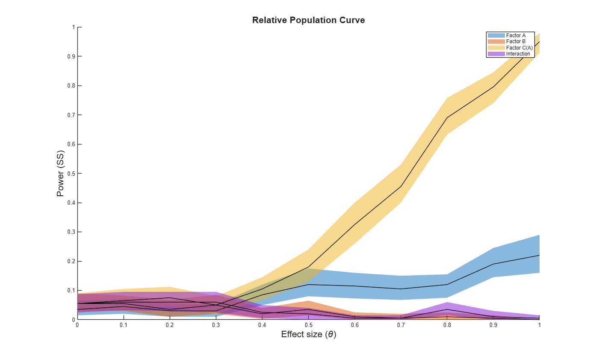
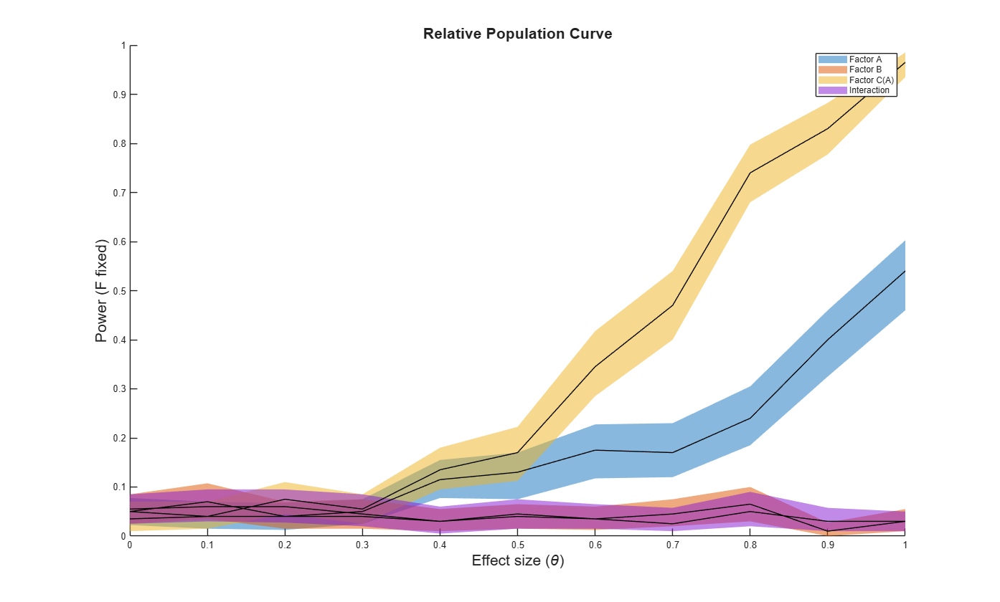
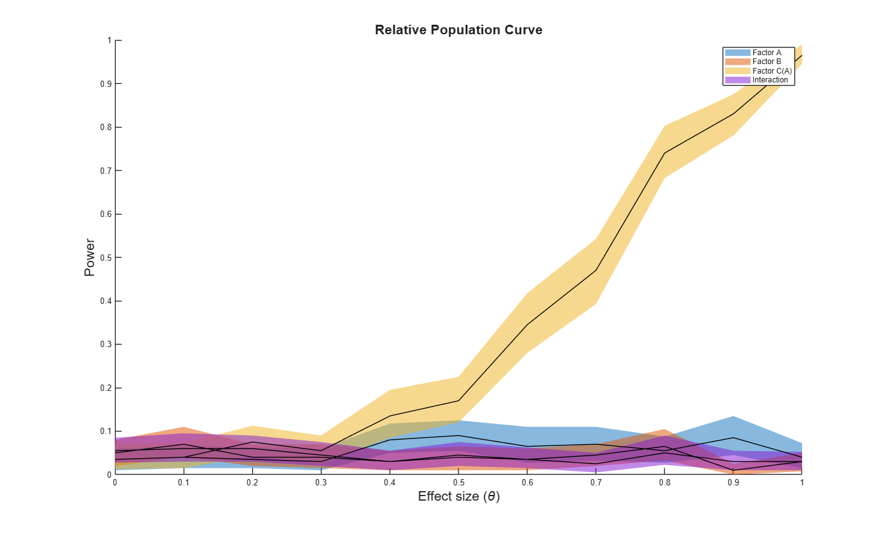
Positive test: all factors and interaction active: best approach F-ratio as the test statistic considering C(A) random nested in A
test = 2; D.k = [.25, .25, .5, .25]; % Model with C(A) random nested in A, LMM tic; i=6; [PCmean{test,i}, PCrep{test,i}, powercurveo{test,i}, H] = powercurve4(D, F, 'Alpha', alpha, 'Model', [1 2], 'Preprocessing', 1, 'Permutations', perm, 'Repetitions', rep, 'Nested', [1 3], 'Random', [0 0 1]); % TIE in A, B and the interaction controlled, but A seems a little below the significance proctime(test,i) = toc; for h=1:length(H) figure(H(h)); legend('Factor A','Factor B','Factor C(A)','Interaction'); axis([0 1 0 1]); saveas(gcf,sprintf('Figures/Figure_%d_%d_%d',test,i,h)); saveas(gcf,sprintf('Figures/Figure_%d_%d_%d.png',test,i,h)); end save RILMM proctime PCmean PCrep powercurveo
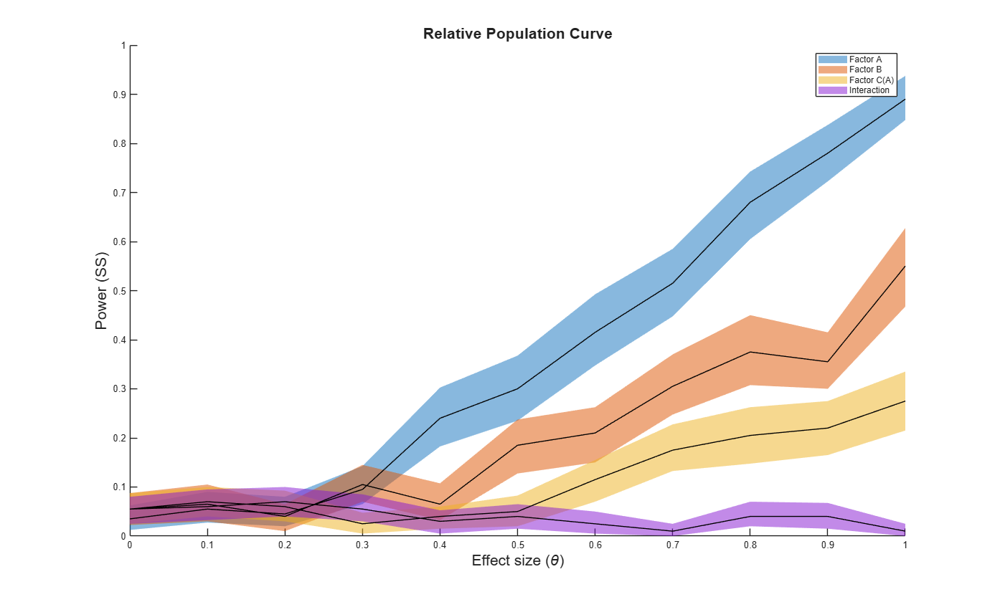
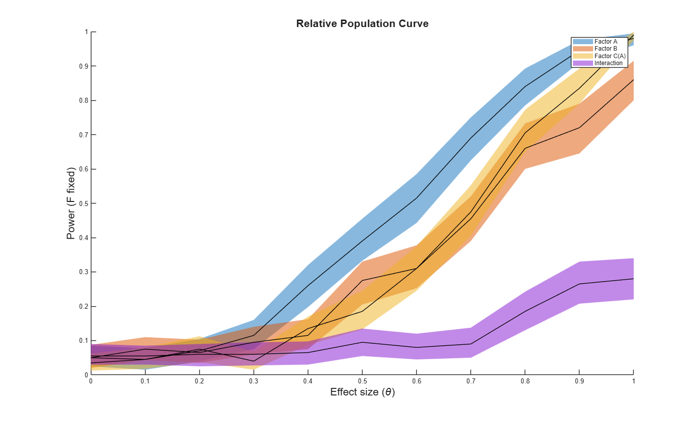
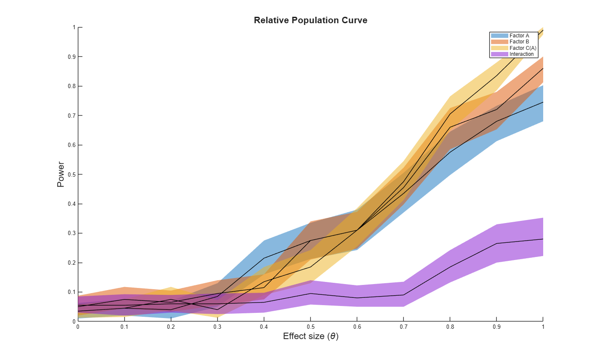
Test for non-normally distributed data in the residuals
test = 3; D.k = [0, 0, .5, 0]; % Null test RG = {@randn,@randn,@randn,@randn,@(N,M)exprnd(1,N,M).^3}; % Model with C(A) random nested in A, LMM tic; i=6; [PCmean{test,i}, PCrep{test,i}, powercurveo{test,i}, H] = powercurve4(D, F, 'Alpha', alpha, 'RandomGen', RG, 'Model', [1 2], 'Preprocessing', 1, 'Permutations', perm, 'Repetitions', rep, 'Nested', [1 3], 'Random', [0 0 1]); % TIE in A, B and the interaction controlled, but A seems a little below the significance proctime(test,i) = toc; for h=1:length(H) figure(H(h)); legend('Factor A','Factor B','Factor C(A)','Interaction'); axis([0 1 0 1]); saveas(gcf,sprintf('Figures/Figure_%d_%d_%d',test,i,h)); saveas(gcf,sprintf('Figures/Figure_%d_%d_%d.png',test,i,h)); end save RILMM proctime PCmean PCrep powercurveo test = 4; D.k = [.25, .25, .5, .25]; % Positive test % Model with C(A) random nested in A, LMM tic; i=6; [PCmean{test,i}, PCrep{test,i}, powercurveo{test,i}, H] = powercurve4(D, F, 'Alpha', alpha, 'RandomGen', RG, 'Model', [1 2], 'Preprocessing', 1, 'Permutations', perm, 'Repetitions', rep, 'Nested', [1 3], 'Random', [0 0 1]); % TIE in A, B and the interaction controlled, but A seems a little below the significance proctime(test,i) = toc; for h=1:length(H) figure(H(h)); legend('Factor A','Factor B','Factor C(A)','Interaction'); axis([0 1 0 1]); saveas(gcf,sprintf('Figures/Figure_%d_%d_%d',test,i,h)); saveas(gcf,sprintf('Figures/Figure_%d_%d_%d.png',test,i,h)); end save RILMM proctime PCmean PCrep powercurveo
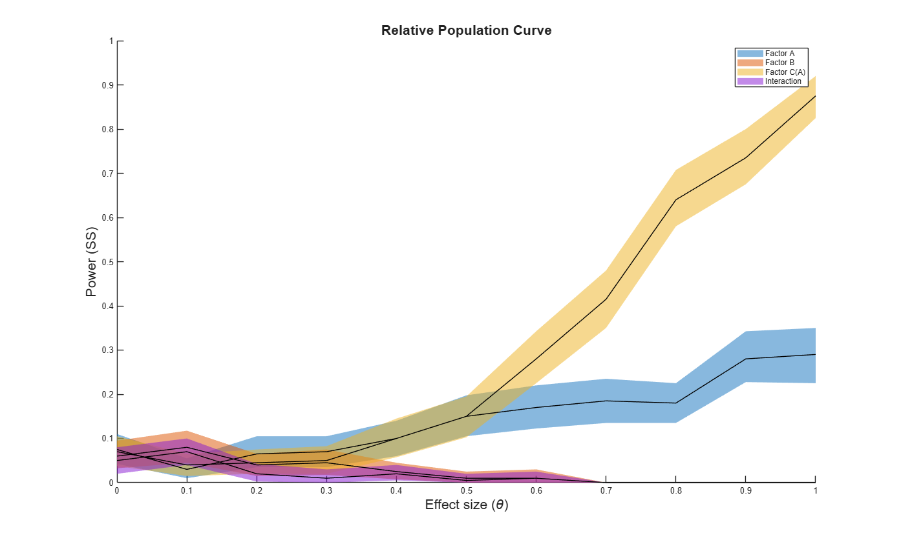
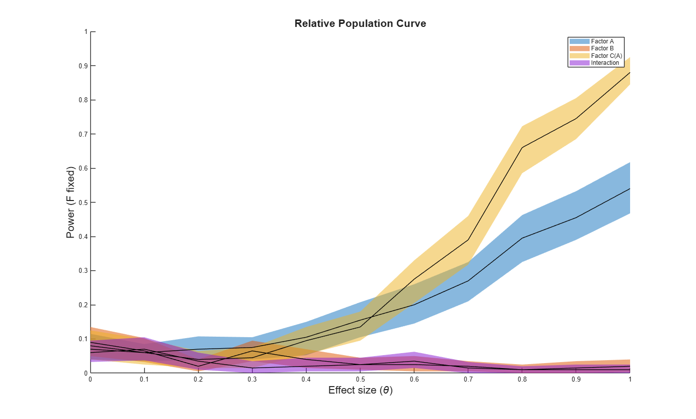
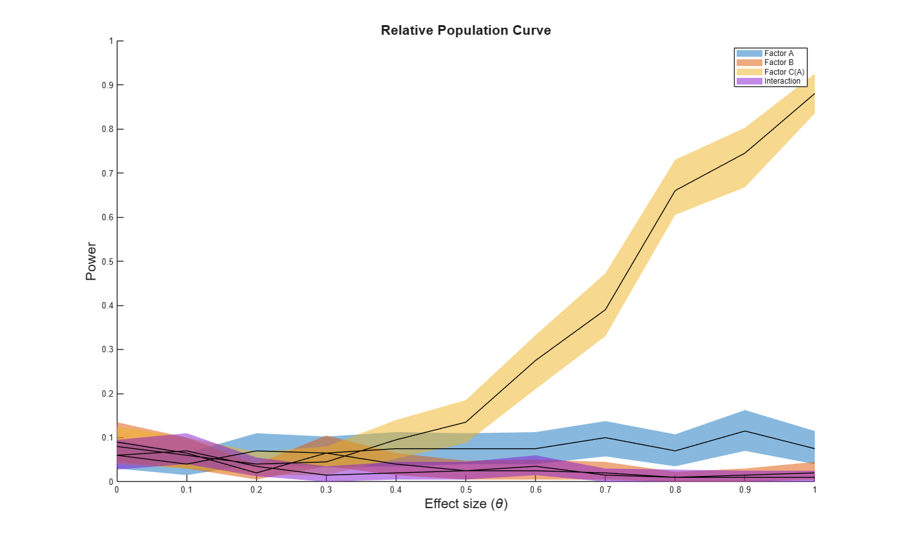
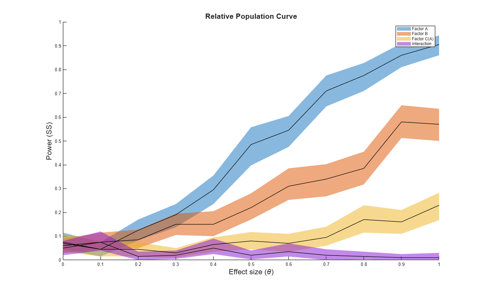
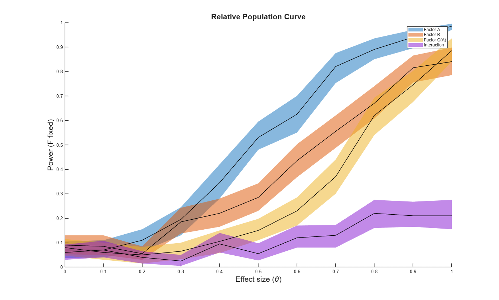
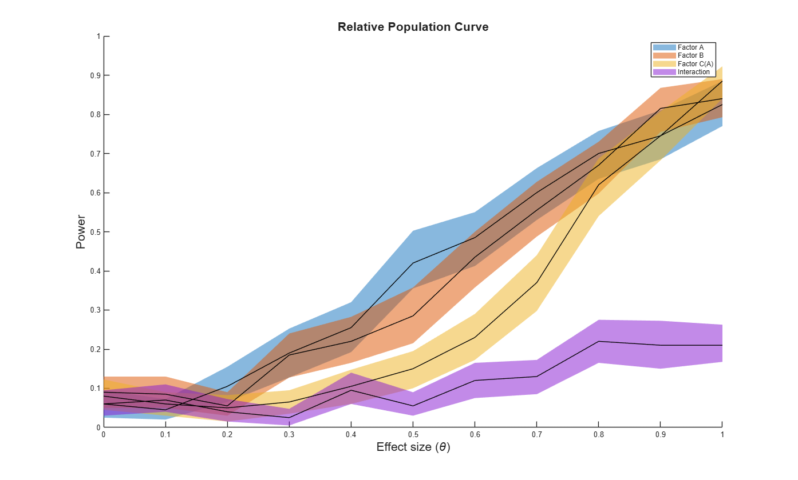
Test for non-normally distributed data in the individual factor
test = 5; D.k = [0, 0, .5, 0]; % Null test RG = {@randn,@randn,@(N,M)exprnd(1,N,M).^3,@randn,@randn}; % Model with C(A) random nested in A, LMM tic; i=6; [PCmean{test,i}, PCrep{test,i}, powercurveo{test,i}, H] = powercurve4(D, F, 'Alpha', alpha, 'RandomGen', RG, 'Model', [1 2], 'Preprocessing', 1, 'Permutations', perm, 'Repetitions', rep, 'Nested', [1 3], 'Random', [0 0 1]); % TIE in A, B and the interaction controlled, but A seems a little below the significance proctime(test,i) = toc; for h=1:length(H) figure(H(h)); legend('Factor A','Factor B','Factor C(A)','Interaction'); axis([0 1 0 1]); saveas(gcf,sprintf('Figures/Figure_%d_%d_%d',test,i,h)); saveas(gcf,sprintf('Figures/Figure_%d_%d_%d.png',test,i,h)); end save RILMM proctime PCmean PCrep powercurveo test = 6; D.k = [.25, .25, .5, .25]; % Positive test % Model with C(A) random nested in A, LMM tic; i=6; [PCmean{test,i}, PCrep{test,i}, powercurveo{test,i}, H] = powercurve4(D, F, 'Alpha', alpha, 'RandomGen', RG, 'Model', [1 2], 'Preprocessing', 1, 'Permutations', perm, 'Repetitions', rep, 'Nested', [1 3], 'Random', [0 0 1]); % TIE in A, B and the interaction controlled, but A seems a little below the significance proctime(test,i) = toc; for h=1:length(H) figure(H(h)); legend('Factor A','Factor B','Factor C(A)','Interaction'); axis([0 1 0 1]); saveas(gcf,sprintf('Figures/Figure_%d_%d_%d',test,i,h)); saveas(gcf,sprintf('Figures/Figure_%d_%d_%d.png',test,i,h)); end save RILMM proctime PCmean PCrep powercurveo
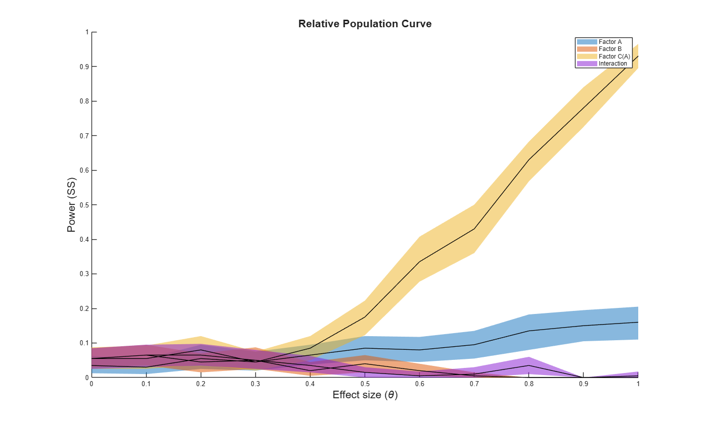
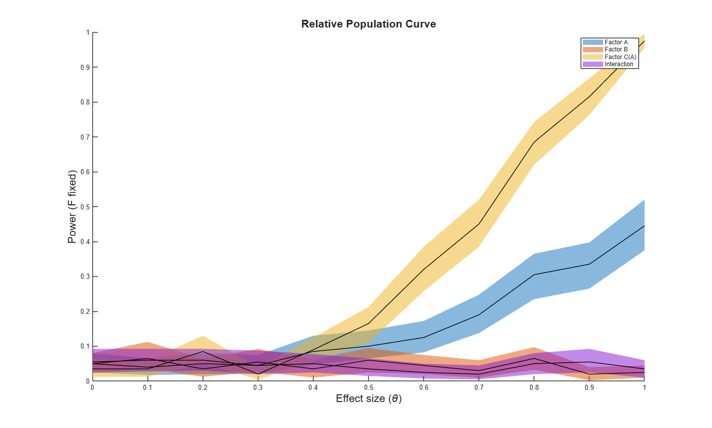
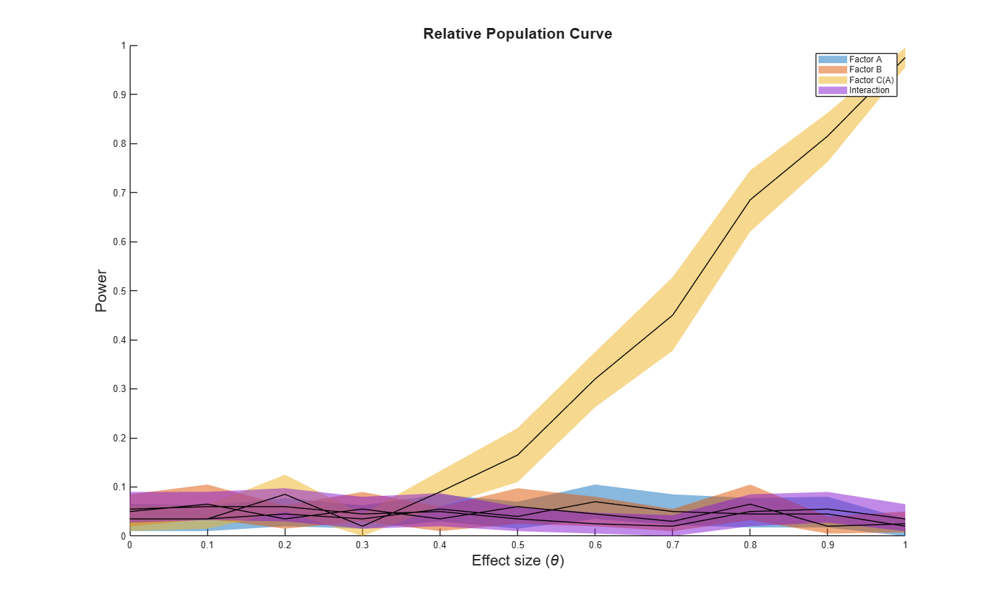
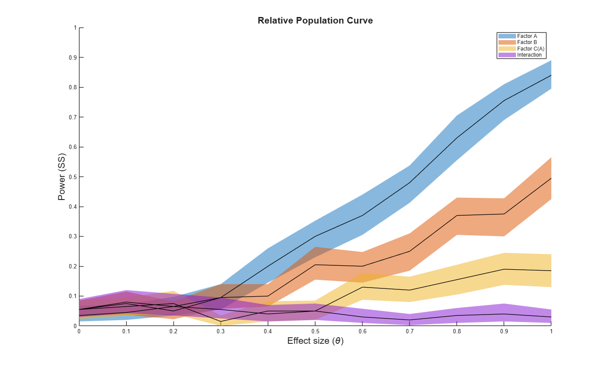
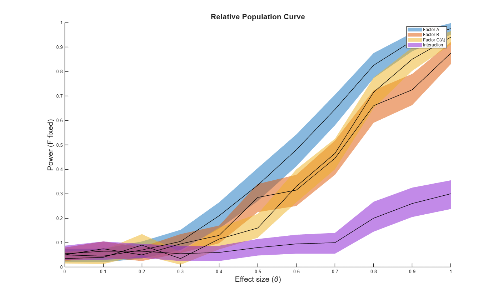
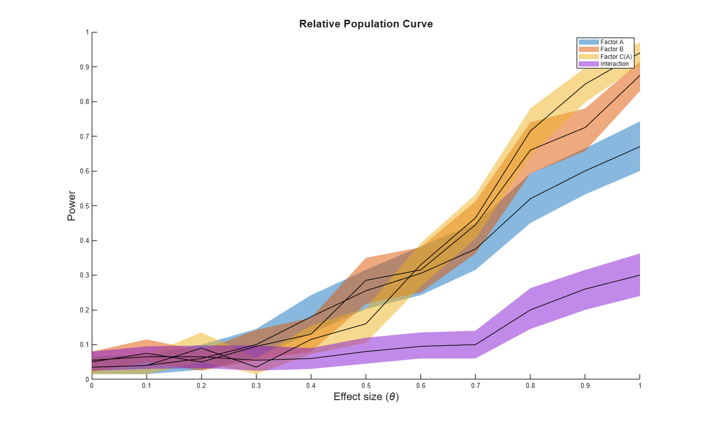
Show procesing times
av = mean(proctime,"omitnan"); tpt = cell2table(num2cell([proctime;av]),'VariableNames',["withoutC","crossedC","SS","fixedF","randomF","LMM"],'RowNames',["test1","test2","test3","test4","test5","test6","MEAN"]); disp(tpt)
withoutC crossedC SS fixedF randomF LMM
________ ________ ___ ______ _______ _____
test1 NaN NaN NaN NaN NaN 17659
test2 NaN NaN NaN NaN NaN 13570
test3 NaN NaN NaN NaN NaN 13598
test4 NaN NaN NaN NaN NaN 13633
test5 NaN NaN NaN NaN NaN 13668
test6 NaN NaN NaN NaN NaN 13687
MEAN NaN NaN NaN NaN NaN 14303